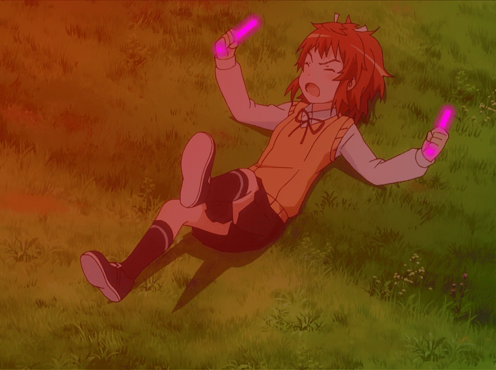

# Image Test
<script src="assets/js/KiraraStats.js"></script>
<div>
	<button>Show Image 1</button>
	
</div>

<div>
	<button>Show Image 2</button>
	
</div>

<div>
	<button>Show Image 3</button>
	
</div>

<div>
	<button id="button4">Show Image 4</button>
	
</div>
# Image Test End

# JCharts Test
<script src="https://cdnjs.cloudflare.com/ajax/libs/Chart.js/2.9.3/Chart.min.js"></script>
<canvas id="myChart" width="400" height="400"></canvas>
<script>
var ctx = document.getElementById('myChart').getContext('2d');
var myChart = new Chart(ctx, {
    type: 'bar',
    data: {
        labels: ['Red', 'Blue', 'Yellow', 'Green', 'Purple', 'Orange'],
        datasets: [{
            label: '# of Votes',
            data: [12, 19, 3, 5, 2, 3],
            backgroundColor: [
                'rgba(255, 99, 132, 0.2)',
                'rgba(54, 162, 235, 0.2)',
                'rgba(255, 206, 86, 0.2)',
                'rgba(75, 192, 192, 0.2)',
                'rgba(153, 102, 255, 0.2)',
                'rgba(255, 159, 64, 0.2)'
            ],
            borderColor: [
                'rgba(255, 99, 132, 1)',
                'rgba(54, 162, 235, 1)',
                'rgba(255, 206, 86, 1)',
                'rgba(75, 192, 192, 1)',
                'rgba(153, 102, 255, 1)',
                'rgba(255, 159, 64, 1)'
            ],
            borderWidth: 1
        }]
    },
    options: {
        scales: {
            yAxes: [{
                ticks: {
                    beginAtZero: true
                }
            }]
        }
    }
});
</script>
# JCharts Test End